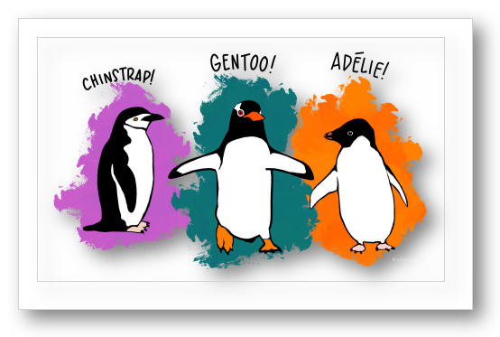

This function adds a shadow to the image, archiving the original image in a separate archive sub-directory.
add_image_shadow(path_image)
| path_image | The character string of the image path name. |
|---|
The path name of image returned invisibly so that the function can be used in a piped workflow.
An internal shadow may be added when the function is called for the first time. Calling the function a second time then adds a border shadow.

Artwork by @allison_horst.
The example batch runs the function on a graph from the palmerpenguins package and is an example of parallelization using the future and furrr packages.
Other image manipulation functions:
reduce_image_size()
# example taken from Art for teaching with palmerpenguins. # https://allisonhorst.github.io/palmerpenguins/articles/art.html suppressPackageStartupMessages({ library(store) suppressWarnings({ library(fs) library(here) library(future) library(furrr) }) }) # create temp directory dir_create(path(tempdir(), "figures")) # copy image to temp directory if(dir_exists(here("man", "figures"))) { file_copy(here("man", "figures", "penguins.png"), path(tempdir(), "figures", "penguins.png")) }#> Error: [ENOENT] Failed to copy 'C:/Users/Graham French/AppData/Local/Temp/RtmpGiMJPS/file18a015a5164c/man/figures/penguins.png' to 'C:/Users/GRAHAM~1/AppData/Local/Temp/RtmpIlEzE6/figures/penguins.png': no such file or directory# add shadows to graph image plan(multisession) path(tempdir(), "figures") %>% { suppressMessages({dir_ls(., glob = "*.png")})} %>% # internal shadow created future_walk(add_image_shadow, .options = furrr_options(seed = TRUE), .progress = TRUE) %>% # outer border shadow created future_walk(add_image_shadow, .options = furrr_options(seed = TRUE), .progress = TRUE) # move figures from temporary directory if(dir_exists(here("man", "figures"))) { file_move(path(tempdir(), "figures", "penguins.png"), here("man", "figures", "penguins_shadow.png")) }#> Error: [ENOENT] Failed to move 'C:/Users/GRAHAM~1/AppData/Local/Temp/RtmpIlEzE6/figures/penguins.png'to 'C:/Users/Graham French/AppData/Local/Temp/RtmpGiMJPS/file18a015a5164c/man/figures/penguins_shadow.png': no such file or directory